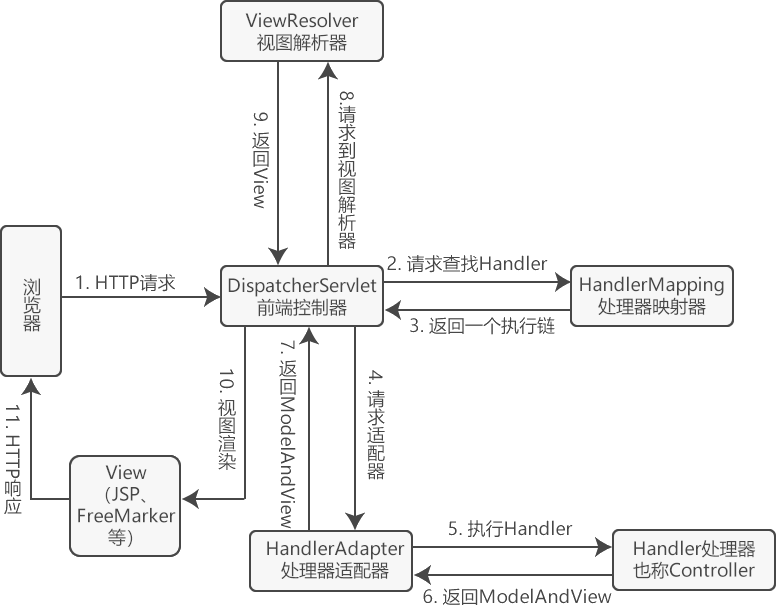

首页 > 编程笔记
Spring MVC执行流程
在学习框架之前，首先来了解一下 Spring MVC 框架的整体请求流程和使用到的 API 类。
Spring MVC 框架是高度可配置的，包含多种视图技术，例如 JSP、FreeMarker、Tiles、iText 和 POI。Spring MVC 框架并不关心使用的视图技术，也不会强迫开发者只使用 JSP。
以上组件中，需要开发人员进行开发的是处理器（Handler，常称Controller）和视图（View）。通俗的说，要开发处理该请求的具体代码逻辑，以及最终展示给用户的界面。
注意：由于 Spring MVC 结构比较复杂，所以学习的时候也要掌握学习方法。首先要明确 Spring MVC 是一个工具，既然是工具，那么我们就需要先掌握工具的使用方法，不要陷入细节中，深入浅出，慢慢通过实际运用来加深对其的理解。
Spring MVC 框架是高度可配置的，包含多种视图技术，例如 JSP、FreeMarker、Tiles、iText 和 POI。Spring MVC 框架并不关心使用的视图技术，也不会强迫开发者只使用 JSP。
Spring MVC 执行流程
Spring MVC 执行流程如图 1 所示。

图 1：Spring MVC执行流程
SpringMVC 的执行流程如下。
图 1：Spring MVC执行流程
- 用户点击某个请求路径，发起一个 HTTP request 请求，该请求会被提交到 DispatcherServlet（前端控制器）；
- 由 DispatcherServlet 请求一个或多个 HandlerMapping（处理器映射器），并返回一个执行链（HandlerExecutionChain）。
- DispatcherServlet 将执行链返回的 Handler 信息发送给 HandlerAdapter（处理器适配器）；
- HandlerAdapter 根据 Handler 信息找到并执行相应的 Handler（常称为 Controller）；
- Handler 执行完毕后会返回给 HandlerAdapter 一个 ModelAndView 对象（Spring MVC的底层对象，包括 Model 数据模型和 View 视图信息）；
- HandlerAdapter 接收到 ModelAndView 对象后，将其返回给 DispatcherServlet ；
- DispatcherServlet 接收到 ModelAndView 对象后，会请求 ViewResolver（视图解析器）对视图进行解析；
- ViewResolver 根据 View 信息匹配到相应的视图结果，并返回给 DispatcherServlet；
- DispatcherServlet 接收到具体的 View 视图后，进行视图渲染，将 Model 中的模型数据填充到 View 视图中的 request 域，生成最终的 View（视图）；
- 视图负责将结果显示到浏览器（客户端）。
Spring MVC接口
Spring MVC 涉及到的组件有 DispatcherServlet（前端控制器）、HandlerMapping（处理器映射器）、HandlerAdapter（处理器适配器）、Handler（处理器）、ViewResolver（视图解析器）和 View（视图）。下面对各个组件的功能说明如下。1）DispatcherServlet
DispatcherServlet 是前端控制器，从图 1 可以看出，Spring MVC 的所有请求都要经过 DispatcherServlet 来统一分发。DispatcherServlet 相当于一个转发器或中央处理器，控制整个流程的执行，对各个组件进行统一调度，以降低组件之间的耦合性，有利于组件之间的拓展。2）HandlerMapping
HandlerMapping 是处理器映射器，其作用是根据请求的 URL 路径，通过注解或者 XML 配置，寻找匹配的处理器（Handler）信息。3）HandlerAdapter
HandlerAdapter 是处理器适配器，其作用是根据映射器找到的处理器（Handler）信息，按照特定规则执行相关的处理器（Handler）。4）Handler
Handler 是处理器，和 Java Servlet 扮演的角色一致。其作用是执行相关的请求处理逻辑，并返回相应的数据和视图信息，将其封装至 ModelAndView 对象中。5）View Resolver
View Resolver 是视图解析器，其作用是进行解析操作，通过 ModelAndView 对象中的 View 信息将逻辑视图名解析成真正的视图 View（如通过一个 JSP 路径返回一个真正的 JSP 页面）。6）View
View 是视图，其本身是一个接口，实现类支持不同的 View 类型（JSP、FreeMarker、Excel 等）。以上组件中，需要开发人员进行开发的是处理器（Handler，常称Controller）和视图（View）。通俗的说，要开发处理该请求的具体代码逻辑，以及最终展示给用户的界面。
注意：由于 Spring MVC 结构比较复杂，所以学习的时候也要掌握学习方法。首先要明确 Spring MVC 是一个工具，既然是工具，那么我们就需要先掌握工具的使用方法，不要陷入细节中，深入浅出，慢慢通过实际运用来加深对其的理解。
关注公众号「站长严长生」，在手机上阅读所有教程，随时随地都能学习。内含一款搜索神器，免费下载全网书籍和视频。

微信扫码关注公众号